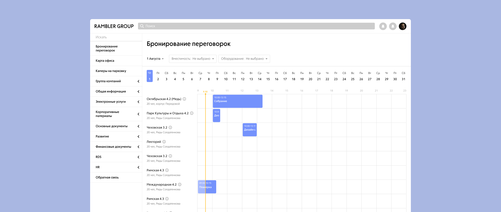
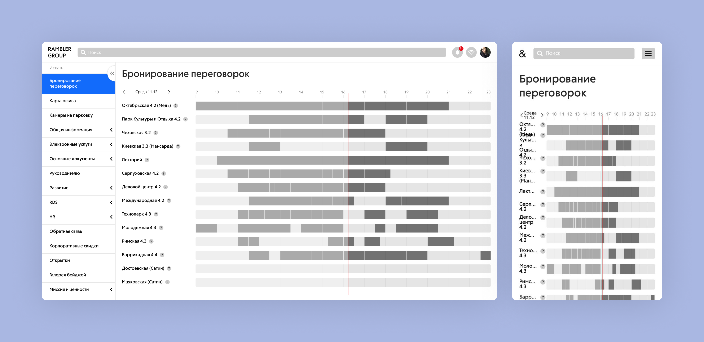
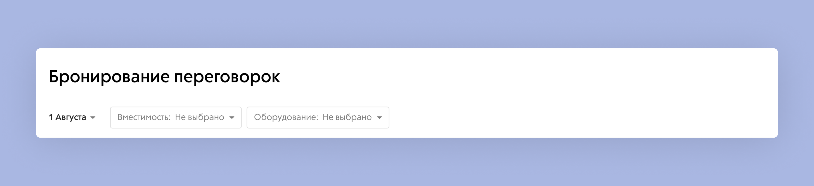
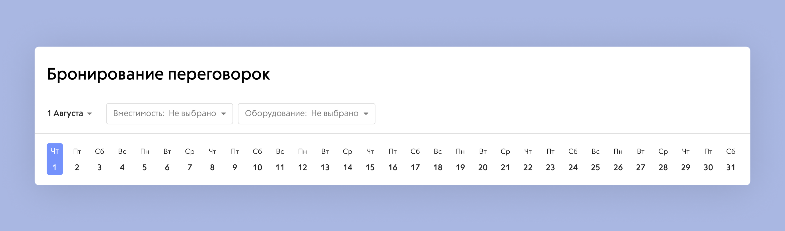
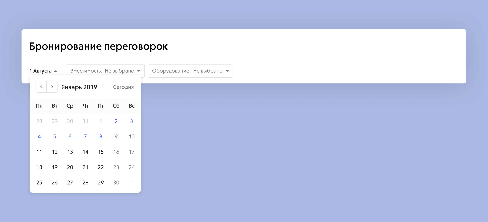
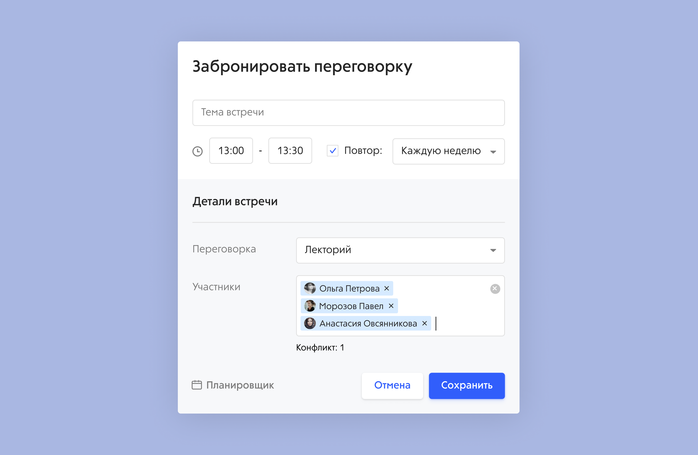
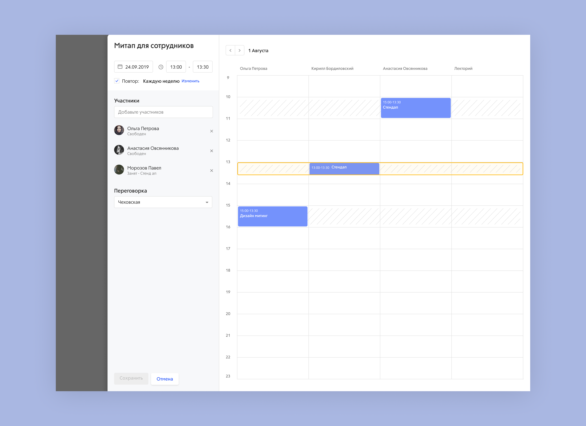
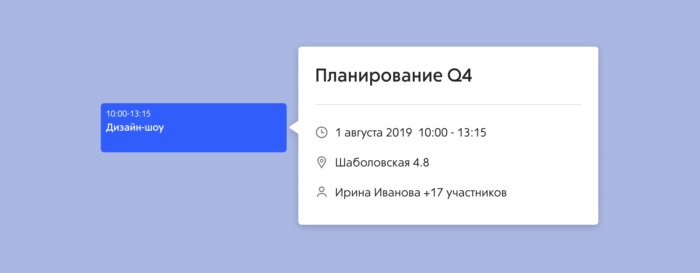
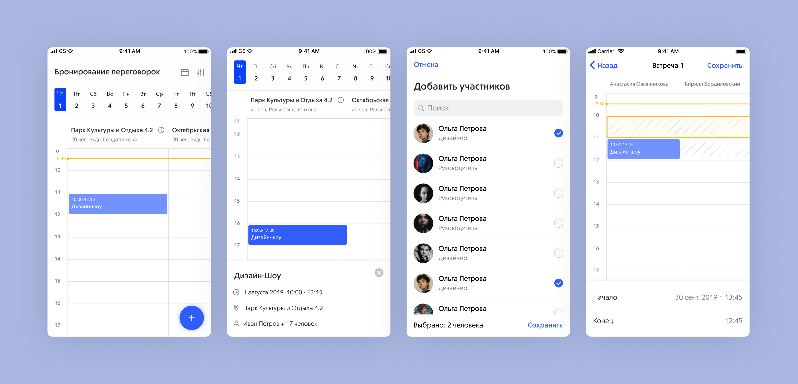

Meeting rooms Переговорки
The old meeting-room booking flow needed to be replaced with something more convenient. We started with user interviews to catch the biggest pain points before designing anything.
Нужно было переделать старый функционал бронирования переговорок на новый, более удобный. В начале работы над проектом мы провели интервью с пользователями и собрали основные недочёты текущей системы.

The Problem
Interviews surfaced these problems in the current tool:
- Past meetings had no detailed view — you couldn't look up their info.
- No way to check another employee's schedule.
- No responsive mobile version.
- Users didn't realize the calendar toggle existed and clicked arrows to move between dates instead.
- You could only invite one attendee to a meeting at a time.

В ходе интервью пользователи отмечали следующие проблемы:
- Если время встречи уже прошло, нельзя посмотреть детальную информацию по ней.
- Нельзя посмотреть расписание сотрудника.
- Нет адаптивной мобильной версии.
- Пользователи не понимают, как включить календарь, и переключаются между датами с помощью стрелок.
- На встречу можно пригласить только одного пользователя.
The Process
The company had 16 meeting rooms with different capacities and equipment. In the old flow, checking room specs required opening a tooltip behind a question icon — slow. We added header filters so you can set the parameters you need and see only matching rooms.

Date-picking needed to be simplified. We added a panel showing the next several dates so users can jump between them with a single click.

For dates further out, or for users used to a full calendar, clicking the date opens the familiar month view.

Всего в компании 16 переговорок, каждая со своей вместимостью и оснащением. В старом интерфейсе, чтобы узнать оснащение переговорки, нужно было смотреть дополнительную информацию под иконкой вопроса. Это отнимало время. В шапку добавили фильтры, с помощью которых можно сразу указать нужные параметры и посмотреть все подходящие переговорки.
Поскольку у пользователей были сложности с переключением даты, этот процесс нужно было упростить. В шапке появилась панель с ближайшими датами на месяц — одним кликом переключаешься между ними.
Если нужна более отдалённая дата или привычнее календарь — при нажатии на дату около фильтров открывается стандартный календарь.
The Solution
Feedback made it clear we needed a scheduler — a view of all invited employees' calendars and the selected room, so you can pick a time that works. The scheduler appears when creating a meeting if there's a time conflict.

Inside the scheduler the same actions are possible as in the popup — you can change date/time, attendees, or swap to a different room.

Meeting details were reworked. In the new layout you can view details even after the meeting ends, and the meeting owner is always visible.

A responsive mobile version was designed as well.

15 users tested the flow across two scenarios covering all new functionality. They quickly found filters, understood the new date panel, and rated the interface improvements positively.
По обратной связи стало понятно, что людям нужен планировщик — просмотр личного расписания приглашённых сотрудников и переговорки, чтобы выбрать удобное время. Планировщик появляется при создании встречи, если возникает конфликт по времени.
Функционал планировщика повторяет попап — можно поменять дату и время, участников или выбрать другую переговорку.
Также поправили отображение информации по встрече. В новом макете деталку можно посмотреть даже если встреча закончилась, всегда виден создатель встречи.
Была спроектирована удобная мобильная версия.
15 пользователей прошли тестирование в двух сценариях, охватывающих весь новый функционал. Пользователи быстро находили фильтры, разобрались с новой панелью дат, все улучшения были оценены положительно.